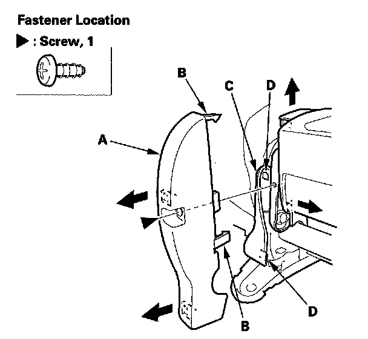

Second Row Seat
Second Row Seat Disassembly/ ReassemblySpecial Tools Required
KTC trim tool set SOJATP2014 *
* Available through the American Honda Tool and Equipment Program
Left Second Row Seat
NOTE:
- Put on gloves to protect your hands.
- Use the appropriate tool from the KTC trim tool set to avoid damage when removing components.
- Take care not to scratch the body or tear the seat covers.
1. Remove the second row seat.
2. From under the seat cushion, release the hooks (A) of the back cover carpet (B) from the seat cushion frame, then pull then carpet back.
3. With seat heater: Disconnect the seat-back heater connector (C), detach the seat heater connector (D), and remove the wire ties (E).
4. Gently pull out the recline outer cover (A) to detach the clips and to release the hooks (B) of the recline inner cover (C), then remove the cover while releasing the inside edge of the cover from the recline adjuster (D).
5. Remove the screw (A), gently pull out the recline inner cover (B) to detach the clip (C), then remove it.
6. Gently pull out the ISO fix bracket outer cover (A) to detach the clip. Release the hooks (B) from the ISO fix bracket inner cover (C), and release the hook (D) of the inner cover from the outer cover, then remove the cover while releasing the inside edge of it from the ISO fix bracket (E).
7. Remove the screw (A) gently pull out the ISO fix bracket inner cover (B) to detach the clips (C), then remove it.

8. Remove the screw, gently pull out the rear center outer cover (A) to release the hook (B) from the center inner cover (C), and to release the hooks (D) of the inner cover from the outer cover, the remove it.
9. Gently pull out the center inner cover (A) to detach the clip, then remove it.
10. Remove the seat cushion (A).
1. Remove the seat belt buckles (B) and seat belt detachable anchor (C) from the elastic straps (D).
2. Remove the nuts (E). Using a T30 TORX bit, remove the bolts (F).
11. Remove the screw, then remove the front center outer cover (A).
12. Using a T40 TORX bit, remove the bolts (A, B), then remove the seat-back (C) and bushing (D).
13. Assemble the seat-back and seat cushion in the reverse order of disassembly, and note these items:
- If the bushing is damaged or stress-whitened, replace it with a new one.
- Replace any damaged clips with new ones.
- Push the clips into place securely.
- With seat heater: Replace the wire tie you removed with a new one.
- With seat heater: Make sure the seat-back heater connector is plugged in properly.
Special Tools Required
KTC trim tool set SOJATP2014 *
* Available through the American Honda Tool and Equipment Program
Right Second Row Seat
NOTE:
- Put on gloves to protect your hands.
- Use the appropriate tool from the KTC trim tool set to avoid damage when removing components.
- Take care not to scratch the body or tear the seat covers.
1. Remove the second row seat.
2. From under the seat cushion, release the hook (A) of the back cover carpet from the seat cushion frame, then pull the carpet (B) back.
3. Release the wire ties (C) fastening the recline cables (D).
4. With seat heater: Disconnect the seat-back heater connector (E) and detach the seat heater connector (F).
5. Gently pull out the recline outer cover (A) to detach the clips and to release the hooks (B) of the recline inner cover (C), then remove the cover while releasing the inside edge of the cover from the recline adjuster (D).
6. Remove the screw (A), gently pull out the recline inner cover (B) to detach the clip (C), then remove it.
7. Gently pull out the center outer cover (A) to remove the screw and to release the hooks (B) from the center inner cover (C), then remove the cover while releasing the inside edge of it from the recline adjuster (D).
8. Gently pull out the center inner cover (A) to detach the clip, then remove it.

9. Remove the nuts (A). Using a T30 TORX bit,
10. Disconnect the recliner cables (A) and the third row seat access rods (B) on both sides, then remove the cables from the clips (C).
11. Using a T40 TORX bit, remove the bolts, then remove the seat-back (A).
12. Assemble the seat-back and seat cushion in the reverse order of disassembly, and note these items:
- If the cable clips and rod fasteners are damaged or stress-whitened, replace them with new ones.
- Replace any damaged clips with new ones.
- Push the clips into place securely.
- Apply multipurpose grease to the moving parts of the seat track.
- Replace the wire ties you removed with new ones.
- Make sure each cable is connected securely.
- With seat heater: Make sure the seat-back heater connector is plugged in properly.